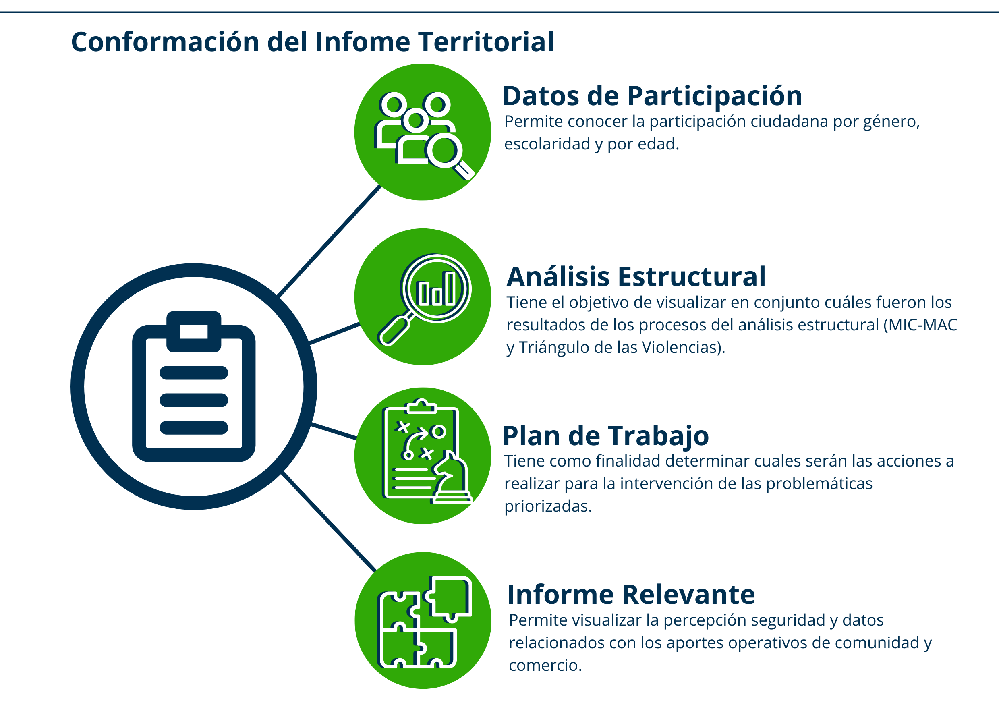

Introducción
Desde el año 2022, el Ministerio de Seguridad Pública ha implementado en todo el territorio nacional el Modelo Preventivo de Gestión Policial, una iniciativa estratégica destinada a fortalecer la seguridad pública mediante un enfoque preventivo, participativo y territorial.
El presente informe constituye una herramienta para la toma de decisiones, orientada al análisis de la participación comunitaria, la percepción ciudadana y la formulación de líneas de acción en materia de seguridad pública.
